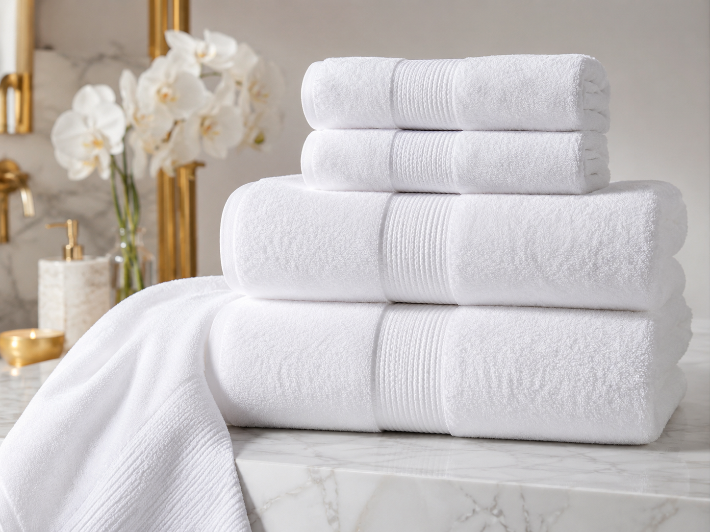
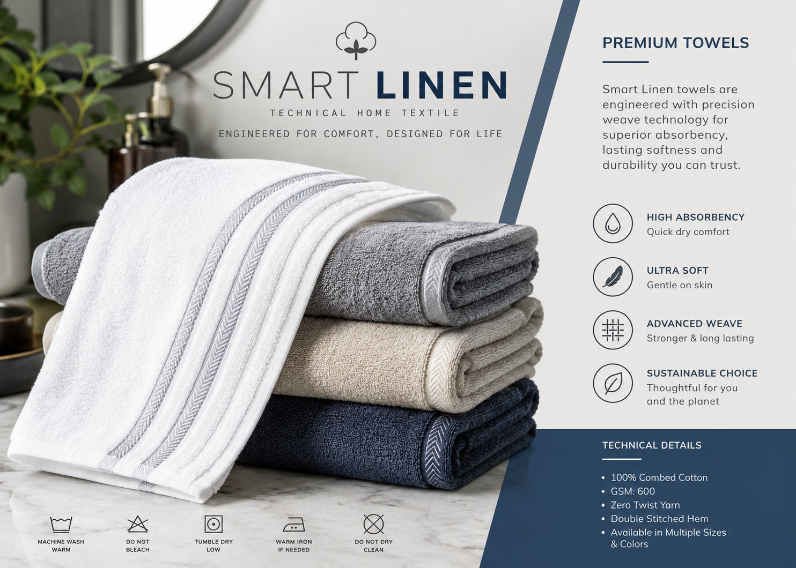

Textiles that care,
Experience that lasts
White Heaven Linen™ is built on a foundation of quality, innovation and
sustainability. By combining extensive textile expertise with trusted
international manufacturing partnerships, we deliver premium textile
solutions that meet the highest standards of craftsmanship, durability
and performance.
Our commitment extends beyond supplying products. We strive to build
lasting relationships by delivering reliable solutions, exceptional
service and continuous value, ensuring every product reflects our
dedication to excellence.
Quality is the foundation of everything we do. Every textile solution is developed with meticulous attention to detail, combining carefully selected materials, expert craftsmanship and rigorous quality assurance to ensure exceptional durability, comfort and performance.
Driven by extensive textile knowledge and continuous innovation, we develop products that combine modern manufacturing techniques, functional design and superior craftsmanship to meet evolving market expectations.
Responsible sourcing, environmentally conscious manufacturing and sustainable business practices are central to our philosophy, helping create textile solutions that deliver lasting value while supporting a more sustainable future.
Through trusted international manufacturing partnerships, we combine technical expertise with world-class production capabilities to ensure consistent quality, reliable supply and flexible manufacturing solutions.
We believe successful business relationships are built on trust, integrity and collaboration. By understanding our customers' requirements, we deliver tailored textile solutions that create long-term value.
White Heaven Linen™ offers a carefully developed portfolio of premium textile solutions designed to combine exceptional quality, innovative craftsmanship and long-lasting performance. Every collection reflects our commitment to excellence, ensuring products that deliver outstanding comfort, durability and reliable performance while supporting responsible manufacturing practices.

Beautifully crafted bedding designed to deliver exceptional comfort, durability and timeless elegance.
Learn More
Premium towels and bath linen developed for superior softness, excellent absorbency and long-lasting performance.
Learn More
Innovative textile products combining advanced functionality, quality materials and reliable manufacturing expertise.
Learn MoreHeadquartered in Ireland, White Heaven Linen™ combines international textile expertise with a customer-focused approach, providing reliable solutions built on trust, professionalism and long-term partnerships.
Working with carefully selected manufacturing partners enables us to deliver consistent quality, dependable supply and scalable production capabilities while maintaining the highest standards of excellence.
Every product is developed with a commitment to precision, performance and continuous improvement, ensuring exceptional value and lasting customer satisfaction.
We believe business success and environmental responsibility go hand in hand, supporting responsible sourcing and sustainable manufacturing throughout our value chain.
Textile Solutions
Manufacturing Network
Driven Excellence
Future Focus
To deliver premium textile solutions that inspire confidence through exceptional quality, innovative craftsmanship and responsible manufacturing, while building lasting partnerships founded on trust, integrity and customer success.
To become a trusted global textile partner recognised for excellence, innovation and sustainability, delivering products that create lasting value for customers while contributing to a more responsible and sustainable future.
Quality, safety and sustainability guide every stage of our product development process. By collaborating with carefully selected manufacturing partners, we support internationally recognised standards that ensure reliability, responsible sourcing and consistent product performance.
Supporting textile products manufactured with a commitment to safety, quality and the responsible use of materials.
Promoting responsible chemical management and manufacturing practices that align with recognised international regulations.
Working with carefully selected manufacturing partners who share our commitment to ethical business practices, quality and sustainability.
We continually evaluate our products, processes and partnerships to deliver innovative textile solutions that create long-term value for our customers.
Whether you are looking for premium textile products, custom manufacturing or a trusted long-term business partner, White Heaven Linen™ is committed to delivering solutions that combine quality, innovation and lasting value.